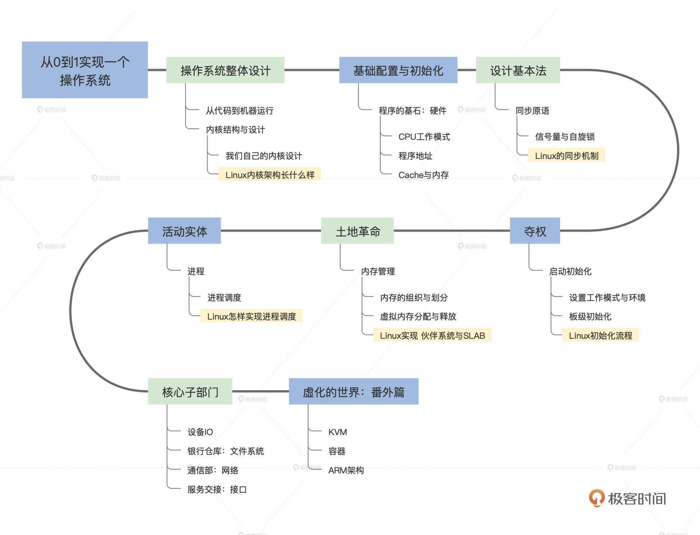

- 00 开篇词 为什么要学写一个操作系统？.md
- 00 编辑手记 升级认知，迭代自己的操作系统.md
- 01 程序的运行过程：从代码到机器运行.md
- 02 几行汇编几行C：实现一个最简单的内核.md
- 03 黑盒之中有什么：内核结构与设计.md
- 04 震撼的Linux全景图：业界成熟的内核架构长什么样？.md
- 05 CPU工作模式：执行程序的三种模式.md
- 06 虚幻与真实：程序中的地址如何转换？.md
- 07 Cache与内存：程序放在哪儿？.md
- 08 锁：并发操作中，解决数据同步的四种方法.md
- 09 瞧一瞧Linux：Linux的自旋锁和信号量如何实现？.md
- 10 设置工作模式与环境（上）：建立计算机.md
- 11 设置工作模式与环境（中）：建造二级引导器.md
- 12 设置工作模式与环境（下）：探查和收集信息.md
- 13 第一个C函数：如何实现板级初始化？.md
- 14 Linux初始化（上）：GRUB与vmlinuz的结构.md
- 15 Linux初始化（下）：从_start到第一个进程.md
- 16 划分土地（上）：如何划分与组织内存？.md
- 17 划分土地（中）：如何实现内存页面初始化？.md
- 18 划分土地（下）：如何实现内存页的分配与释放？.md
- 19 土地不能浪费：如何管理内存对象？.md
- 20 土地需求扩大与保障：如何表示虚拟内存？.md
- 21 土地需求扩大与保障：如何分配和释放虚拟内存？.md
- 22 瞧一瞧Linux：伙伴系统如何分配内存？.md
- 23 瞧一瞧Linux：SLAB如何分配内存？.md
- 24 活动的描述：到底什么是进程？.md
- 25 多个活动要安排（上）：多进程如何调度？.md
- 26 多个活动要安排（下）：如何实现进程的等待与唤醒机制？.md
- 27 瞧一瞧Linux：Linux如何实现进程与进程调度_.md
- 28 部门分类：如何表示设备类型与设备驱动？.md
- 29 部门建立：如何在内核中注册设备？.md
- 30 部门响应：设备如何处理内核I_O包？.md
- 31 瞧一瞧Linux：如何获取所有设备信息？.md
- 32 仓库结构：如何组织文件_.md
- 33 仓库划分：文件系统的格式化操作.md
- 34 仓库管理：如何实现文件的六大基本操作？.md
- 35 瞧一瞧Linux：虚拟文件系统如何管理文件？.md
- 36 从URL到网卡：如何全局观察网络数据流动？.md
- 37 从内核到应用：网络数据在内核中如何流转.md
- 38 从单排到团战：详解操作系统的宏观网络架构.md
- 39 瞧一瞧Linux：详解socket实现与网络编程接口.md
- 40 瞧一瞧Linux：详解socket的接口实现.md
- 41 服务接口：如何搭建沟通桥梁？.md
- 42 瞧一瞧Linux：如何实现系统API？.md
- 43 虚拟机内核：KVM是什么？.md
- 44 容器：如何理解容器的实现机制？.md
- 45 ARM新宠：苹果的M1芯片因何而快？.md
- 46 AArch64体系：ARM最新编程架构模型剖析.md
- LMOS来信：第二季课程带你“手撕”计算机基础.md
- 大咖助场 以无法为有法，以无限为有限.md
- 用户故事 yiyang：我的上机实验“爬坑指南”.md
- 用户故事 成为面向“知识库”的工程师.md
- 用户故事 技术人如何做选择，路才越走越宽？.md
- 用户故事 操作系统发烧友：看不懂？因为你没动手.md
- 用户故事 用好动态调试，助力课程学习.md
- 用户故事 艾同学：路虽远，行则将至.md
- 结束语 生活可以一地鸡毛，但操作系统却是心中的光.md
结束语 生活可以一地鸡毛，但操作系统却是心中的光
你好，我是LMOS。
感谢你的一路相伴，我们的《操作系统实战45讲》专栏写到此处，你亦能学至此处，多半是出于兴趣，出于一种对操作系统的热爱，出于一种对事物本质发自内心的苛求……
如果是这样，请你永远保持这份心性，它会给你带来更多意想不到的结果。走到这里，也让我们先停住前进的脚步，回忆一下这一路走来都做了些什么事情，收获了什么，有什么让我们印象深刻的体会？
我作为Cosmos和《操作系统实战45讲》专栏这两大作品的作者先来开个头，跟你说说我自己的感受和体会，可以用两个“出乎意料”来表示。
第一个“出乎意料”，是课程出乎意料的难写。我之前写过书，也写过多个操作系统内核，更是做过业界重量级的傲腾项目，但是专栏之难，超过我之前做过所有的项目之难。
一开始，我也不明白为什么写专栏比写代码难？但经历了整个专栏的筹备、备稿、修改，一直到更新和答疑的各个环节，我才深刻地体会到这点。
我最初设计整个专栏的时候，就想兼顾宏观思路和细节实现，既带你领略操作系统的壮观风景，也能作为指导手册让你跟着我动手实现。但是写起来才发现，为了完成这两点，我实际花的时间跟精力，远远超过了预估。
写专栏，难就难在要用通俗的大白话，把复杂的操作系统“讲”出来，而不只是写出来；难就难在细节与重点的把握和梳理。如果只有细节，就难以体现出重点。可是如果只有重点思路，我又担心内容会让你觉得过于抽象；难就难在，我要交付的对象，不再是编译器，而是各个不同思想层次、不同思维方式的人。
第二个“出我意料”，是出我意料的“热”。我搞了很多年的操作系统，感觉操作系统在整个行业之中非常冷，操作系统之冷，是那种高处不胜寒的“冷”，是学校老师都只愿意从理论上一笔带过的“冷” ，是互联网时代的创新企业无法触及，也不敢触及的“冷”。
但是出我意料的是，专栏刚刚上线不久就引起了业界广泛关注，其热度超出了我的想像。我以为在业务为王的今天，很少有人会关注这么底层的操作系统。不得不说，这些关注从侧面说明了操作系统在各从业人员心中的重要性，同时也说明了我们对亲手实现一个操作系统这件事充满好奇。
前面这些是对专栏的体会和感受，下面我想谈一谈写Cosmos的感受。相信看过专栏的同学，对操作系统工程之浩大，代码之精微，都有了深切的体会和认知。说开发成熟操作系统之难，难于上青天，这绝不是夸张和开玩笑。
在互联网时代，我可能比围观的同学更清楚，不能基于功利的目的去开发Cosmos，在今天它无法直接给我们产生价值，我开发Cosmos是基于兴趣，是对技术的探索和追求。我就是那种人——生活可以一地鸡毛，但操作系统却是心中的光。
Cosmos断断续续开发很多年，几次推倒重来，正是在这种一次次重构之下，摸索、总结，才设计出了今天Cosmos的架构。很多代码要反复测试验证，对于没有达到预期的代码，我需要对其算法进行分析，找出原因。
Cosmos的调试是最难的，往往需要查找其文件的反汇编代码，然后一条一条对比，在脑中模拟指令的执行过程和结果，并发现隐藏其中的Bug，这些都是极其烦琐的事情。不瞒你说，我也会一个bug卡好几天，感觉写内核仿佛是一场“法事”，一个人念咒、画符，请神跳舞……可以说，若没有“爱”的加持，真的很难坚持下来。
其实，我们写专栏的顺序正是我开发Cosmos过程的顺序，只有这样，才能把我的经验原样分享给你们。

因为我就是从Hello World应用程序开始，探索计算机是如何运行一个应用程序的，进而一步步了解了操作系统内核中的所有组件，在心中建立了一个现代操作系统内核的模型。
因为操作系统内核必须要运行在具体的计算平台上，所以我研读了大量的芯片手册，并且着重了解了其中CPU和内存的细节。接着，我又学习了编译工具集。有了这些基础，我开始写引导器和初始化代码，逐步实现了内存管理、进程调度、设备I/O、文件系统、网络和若干设备驱动程序，最后实现了系统调用和应用程序库。
虽然这些组件比成熟的操作系统内核中的组件简单得多，但实现的都是最关键、最核心、最必要的功能机制，简小而全面一直是我的思想，而这也正是我们这些操作系统初学者想要的。
我们的专栏虽然结束了，但是我们的Cosmos才刚刚开始。不知道你是否也在思考，我们亲自建造的Cosmos，为什么没有强大的文件系统和网络组件，为什么没有精美且高性能的图形界面，为什么没有工业级的安全性？
如果你真的在思考、在好奇，如果你真的有兴趣，还想继续探索，我真诚地希望你能再次阅读更多的书籍，或者借助万能的互联网，去搜寻资料，去寻找答案。
相信以这份好奇和兴趣为动力，必定会从一无所知，到知道一点点，再到知道一部分，慢慢地积累，也许有一天你会惊奇地跳起来，用尽全身力气喊出来：“原来我也能了”，“我真的能了”！
到了那一天，想必我们也已经有了全新的开始，那一定将是真正具备创造性的开始。
如果你愿意，也可以加入我们的Cosmos开源社区，让我们再续前缘，一起开发Cosmos操作系统，让我们一起开始创造性的工作。
Cosmos开源社区以Cosmos的“Ψ(Psi)”架构为基础进行展开，Ψ(Psi)内核架构有别于微内核、宏内核、混合内核，它吸收了其它内核架构的优势，完全摒弃了其它内核架构的劣势，这就导致了现有的硬件架构体系，不适应运行这样的Cosmos。
为此，我们将以RISCV处理器为基础进行扩展，形成“Ψ(Psi)”架构的RISCV处理器，这个处理器将成为运行Cosmos特有的处理器，同时这个“Ψ(Psi)”架构的RISCV处理器也会开源，形成硬件、软件双开源的方式，欢迎各方勇士加入，一起迎接挑战，一起开创IT新纪元。
也许有一天，人们会用着我们建造的操作系统，在我们自己设计的计算机上，听着杜比级别的音乐、看着4K画质的高清电影、玩着如梦如幻的3D游戏、和远方的恋人进行视频通话、进行超大规模的科学计算、处理着海量级的网络数据……
但是别忘了，这仅仅是因为我们最初那一点点求知欲和兴趣……
虽然暂时需要告别，但我期待后会有期。感谢3个多月的同行，真心希望我的专栏对你有所帮助。
我知道，很多同学总是默默潜水，默默学习。所以在专栏即将结束的今天，我希望听听你学习这个专栏的感受。这里我为你准备了一份毕业问卷，题目不多，希望你可以花两分钟填一下。
© 2019 - 2023 Liangliang Lee. Powered by gin and hexo-theme-book.